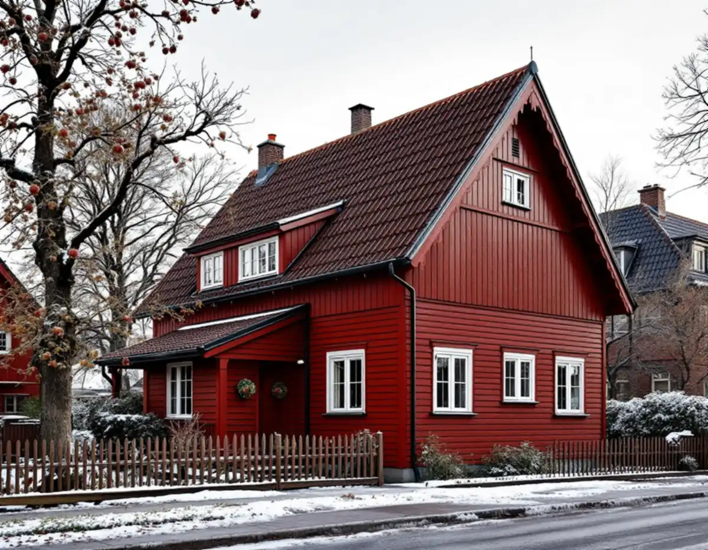
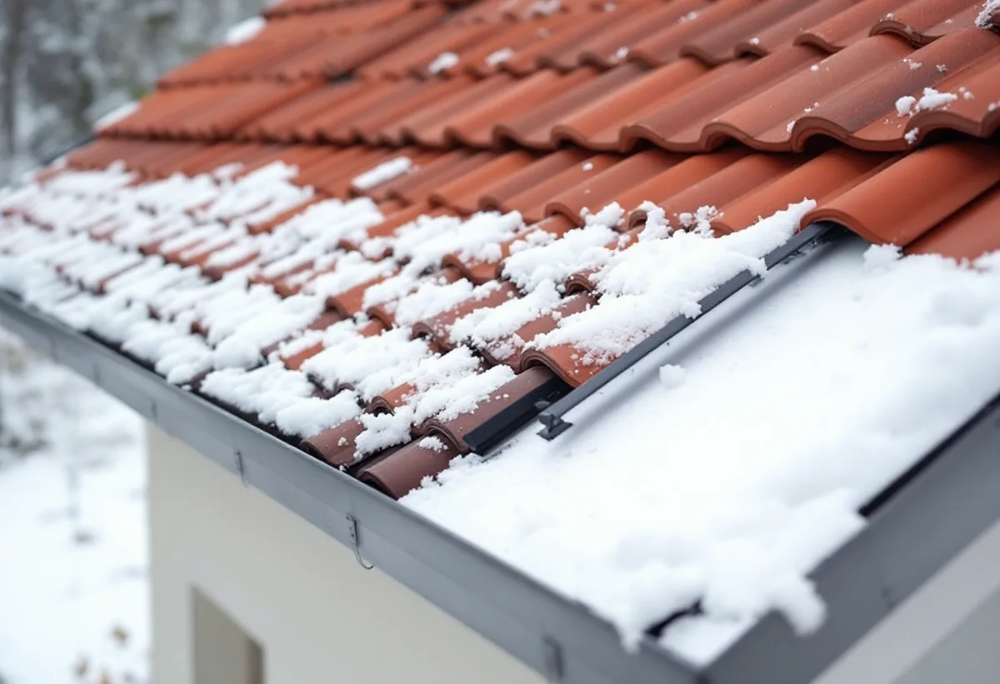

Platsbesök
Vi tittar på takfallen, var snön hamnar och hur rännor och stuprör mår efter förra vintern.
I Gamla Enskede och Enskededalen är taken branta och täckta med rött tegel. Det ger husen deras karaktär, men det gör också att snö och is gärna glider ner mot förgården och gatan när det blir töväder. Geal Entreprenad AB har egna plåtslagare som monterar snörasskydd, byter hängrännor och lägger plåt på kupor och verandatak i Enskede, med gratis platsbesök och skriftligt kostnadsförslag.

Gamla Enskede blev Stockholms första trädgårdsstad och anlades efter stadsplanedirektören Per Olof Hallmans stadsplan från 1908. Enligt stadens vägledning Varsam utveckling av småhus- och villaområden blev det nationalromantiska inslaget tydligt här, med branta takfall, stor formrikedom och småspröjsade fönster. Vägledningen sammanfattar trädgårdsstädernas tak med att de är branta och genomgående täckta med rött tegel, och att en veranda vid entrén är vanlig på villorna.
Norr om dåvarande Södertörnsvägen tillkom Enskededalens villabebyggelse åren 1917–25, enligt Stadsmuseets Stockholms Spår med den svenska småstaden som förebild. På Enskedefältet byggdes mer än 400 småstugor genom självbyggeri mellan 1930 och 1932, och taken täcktes med enkupigt rött lertegel. För plåtslagaren är grundförutsättningen ändå densamma: ett tegeltak med plåt i takfot, ränndalar och kring skorsten och kupor.
Ju brantare taket är, desto lättare släpper snön när den börjar smälta. Det är därför snörasskydd och rännor hör ihop på ett tak av det här slaget: skyddet håller kvar snön tills den smält, och rännan ska klara vattnet som kommer efteråt utan att frysa igen.

Ordningslagens 3 kap. 3 § säger att snö och is som kan rasa ned och skada personer eller egendom på offentlig plats ska avlägsnas från tak, rännor och liknande anordningar utan oskäligt dröjsmål. Det ska dessutom göras så att det inte i sig skapar risk för att någon skadas. Ansvaret ligger på ägaren, eller på den som genom nyttjanderättsavtal eller på annan grund är i ägarens ställe.
Samma paragraf säger att brister på byggnader som medför risk för skada på offentlig plats ska avhjälpas utan oskäligt dröjsmål. En ränna som hänger löst över en gångväg eller ett skorstensbeslag som lossnat i en storm är alltså inte bara ett läckage att laga någon gång, utan en brist som ska åtgärdas.
Lagen gäller offentlig plats, alltså gator, trottoarer och liknande. För ett hus vars takfall vetter mot gatan är det just där snön hamnar. Lutar taket mot entrén eller en gång på tomten föreslår vi skydd även där. Mer om utrustningen finns under taksäkerhet och snörasskydd.
Ett snörasskydd består av fästen som skruvas genom tegel och läkt ned i takstolarna och av rör eller galler som håller kvar snön. På ett tegeltak byts ofta några pannor mot pannor med genomföring, så att fästet kan tätas mot underlaget. Skyddet placeras en bit upp från takfoten, ovanför ytterväggen, så att lasten tas av konstruktionen och inte av rännan.
Stockholm Vatten och Avfall nämner i sin checklista mot översvämningar att hängrännor, stuprör och brunnar ska rensas från löv, is och snö. En ränna som är full av löv när frosten kommer fryser lättare igen, och då rinner nästa smältvatten över kanten och bildar istappar. Vi ser därför över rännans fall, krokar och skarvar samtidigt som snörasskyddet monteras.
Bildas istappar trots att rännan är ren och lutar rätt sitter orsaken ofta längre upp: värme från bostaden som smälter snön på taket och vatten som fryser igen när det når den kalla takfoten. Då är det vinden eller takets isolering som behöver ses över, inte bara plåten. Läs mer om det under istappar och isbildning.
Verandan vid entrén har ofta ett eget litet tak med plåt, och där det möter fasaden eller huvudtaket sitter en anslutning som lätt släpper in vatten. Samma sak gäller de små kuporna på trädgårdsstädernas tak, där plåten på kupans sidor och tak ska föra vattnet förbi tegelpannorna. Vi byter sådan plåt i samma utförande som den gamla, så att detaljen ser ut som förut.
Stadens vägledning råder fastighetsägare i trädgårdsstäderna att ta tillvara eller återskapa karaktärsskapande material, kulörer, byggnadsdelar och detaljer så långt som möjligt. Gamla Enskede är dessutom riksintresse för kulturmiljövården. Enligt Stockholms stad behövs bygglov inom ett riksintresse för åtgärder som annars är bygglovsbefriade, så ett byte till ett annat taktäckningsmaterial eller en ny kulör på plåten är en fråga för stadsbyggnadskontoret. Vi kontrollerar Stadsmuseets klassificeringskarta innan vi föreslår något annat än det som sitter där i dag.
Ska hela taket läggas om, med nytt underlag och nya pannor, finns mer om det under takrenovering i Enskede. Allmänt om plåtarbeten finns på sidan plåtslagare.
Vi tittar på takfallen, var snön hamnar och hur rännor och stuprör mår efter förra vintern.
Vi slår upp fastigheten i Stadsmuseets karta innan material eller kulör ändras.
Snörasskydd, rännor och plåt på veranda och kupor redovisas som egna poster.
Fästen tas ner i takstolarna och genomföringarna tätas mot underlaget.
Vi visar var skyddet sitter och hur rännorna hålls fria från löv inför vintern.
I ett småhus räknar Skatteverket det som rotarbete att reparera, rengöra eller byta ut plåttak, hängrännor och stuprör, och att montera och montera ner byggnadsställningar i samband med rotarbetet. Avdraget gäller arbetskostnaden, inte material eller resor.
Avdraget är 30 procent av arbetskostnaden, högst 50 000 kronor per person och år och högst 75 000 kronor tillsammans med rutavdrag. Du behöver äga bostaden när arbetet utförs. Vi drar avdraget direkt på fakturan.
Takets lutning och höjd, hur många meter snörasskydd som behövs, om rännorna kan justeras eller måste bytas, hur många kupor och verandatak som har plåt och vilken ställning som krävs. Efter ett gratis platsbesök får du ett skriftligt kostnadsförslag.
Plåttak, hängrännor och beslag.
Plåtslagare i Stockholm →Takbyte, takbesiktning och plåtarbeten.
Takläggare i Enskede →Trädgårdsstad med lertegel.
Takrenovering i Enskede →Trädgårdsstaden, kartan och lovet.
Attefallshus i Enskede →Typhus i trä, träbjälklag och bostadsrätt.
Badrumsrenovering i Enskede →Byggplatsen, gatan och träden.
Byggföretag i Enskede →Trädgårdsstadens kulörer.
Fasadmålning i Enskede →Trähus, putsade typhus och småstugor i Enskede.
Fasadrenovering i Enskede →Fönster i riksintresset.
Fönsterbyte i Enskede →Trädgårdsstadens fönster.
Fönsterrenovering i Enskede →Lut, såpa och olja på fur och gran.
Golvläggare i Enskede →Slipa fram gamla brädgolv i villan.
Golvslipning i Enskede →Typhus, dubbelhus och småstugor.
Köksrenovering i Enskede →Trädgårdsstad, egnahem och småstugor i Enskede.
Målare i Enskede →Verandor, entréer och bodar i trädgårdsstaden.
Snickare i Enskede →Tapet i vindsrum och snedtak.
Tapetsering i Enskede →Små tomter och riksintresse.
Tillbyggnad i Enskede →Renovera innan ni flyttar in.
Totalrenovering i Enskede →